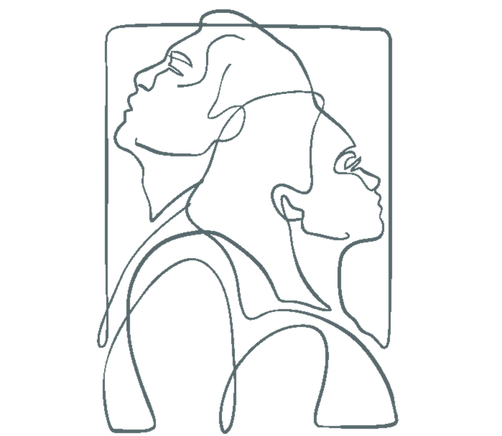

عشق، دلبستگی و امنیت عاطفی
آشنایی با مفاهیم پایه و عواملی که به شکلگیری احساس امنیت در رابطه کمک میکنن.
نسخۀ دیجیتال، برای مطالعۀ رایگان
شناخت رابطه، صمیمیت و مسئولیتپذیری عاطفی
«میانِ ما» درباره شناخت رابطه و مسئولیت عاطفیه؛ با تمرکز ویژه بر نقش مرد در ساختن رابطهای که هر دو نفر توش احساس امنیت، احترام و رضایت داشته باشن.
این کتاب برای آموزش و افزایش آگاهی نوشته شده، نه جایگزینی برای درمان یا مشاورۀ تخصصی.

طرح جلد و لاینآرت: مهرداد کاظمی جوان«میانِ ما» از یه سؤال شروع میکنه: برای داشتن یک رابطۀ عاطفی سالم و ماندگار، واقعاً چه چیزهایی رو باید یاد بگیریم؟
کتاب از عشق و دلبستگی شروع میکنه و به موضوعهایی مثل امنیت عاطفی، شناخت نیازهای شریک زندگی، ارتباط مؤثر، تفاوتهای فردی، رفتار مرد، مدیریت تعارض، تعهد و پایداری رابطه میرسه. در بخشهای مختلف، تمرکز ویژهای روی مسئولیتپذیری، بلوغ عاطفی، درک نیازهای شریک زندگی و سهم مرد در کیفیت رابطه داره.
این تمرکز به معنی یکطرفه دیدن مسئولیتها نیست. رابطه با تلاش یک نفر ساخته نمیشه و قرار نیست زنها و مردها رو با یک الگوی ثابت توضیح بدیم. هدف، شناخت بهتر رفتار انسان در رابطه و توجه به سهم هر دو نفره.
برای توضیح موضوعها، کتاب از حوزههایی مثل روانشناسی روابط نزدیک، نظریۀ دلبستگی، روانشناسی اجتماعی، ارتباطات بینفردی و تنظیم هیجانات کمک میگیره. مفاهیم در کنار مثالها و موقعیتهای روزمره مطرح میشن تا ارتباط بین پژوهش و زندگی واقعی روشنتر بشه.
«میانِ ما» بهصورت دیجیتال توسط مجله رکسو منتشر شده. برای آشنایی بیشتر با نویسنده هم میتونی به وبسایت آریا کیانزاد سر بزنی.
چند محور اصلی کتاب به شناخت رابطه و کیفیت ارتباط بین دو نفر برمیگرده.
آشنایی با مفاهیم پایه و عواملی که به شکلگیری احساس امنیت در رابطه کمک میکنن.
توجه به نیازها، انتظارات و تفاوتهای فردی که روی کیفیت ارتباط اثر میذارن.
فهم بهتر گفتوگو، سوءتفاهمها و واکنشهایی که موقع اختلاف شکل میگیرن.
بررسی مسئولیتپذیری، بلوغ عاطفی و سهم مرد در ساختن یک رابطۀ دوطرفه.
مخاطب اصلی کتاب مردانی هستن که میخوان شناخت دقیقتری از روابط عاطفی داشته باشن و نقش خودشون رو در ساختن یک رابطۀ سالم بهتر درک کنن. بااینحال، محتوای کتاب به مردها محدود نمیشه.
فایل PDF کتاب «میانِ ما» رو مستقیم دانلود کن و هر زمان خواستی بهش برگرد.
اطلاعات اصلی انتشار و استفاده از نسخۀ دیجیتال کتاب رو اینجا میتونی پیدا کنی.
بله. نسخۀ دیجیتال کتاب بهصورت رایگان برای دانلود و مطالعه منتشر شده.
کتاب در قالب فایل PDF و بهصورت نسخۀ دیجیتال منتشر شده. میتونی فایل رو دانلود کنی و روی دستگاهت بخونی.
خیر. محتوای کتاب با هدف آموزش و افزایش آگاهی نوشته شده و جایگزین رواندرمانی، مشاورۀ تخصصی یا ارزیابی بالینی نیست.
دانلود و مطالعۀ نسخۀ منتشرشده رایگانه، اما حقوق مادی و معنوی اثر برای نویسنده محفوظ است. بازنشر، تکثیر، ترجمه یا انتشار تمام یا بخشی از کتاب به اجازۀ کتبی صاحب اثر نیاز داره.